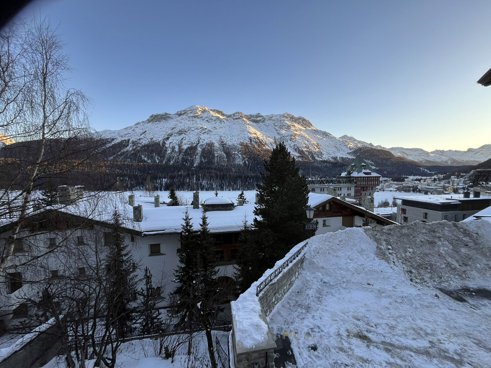
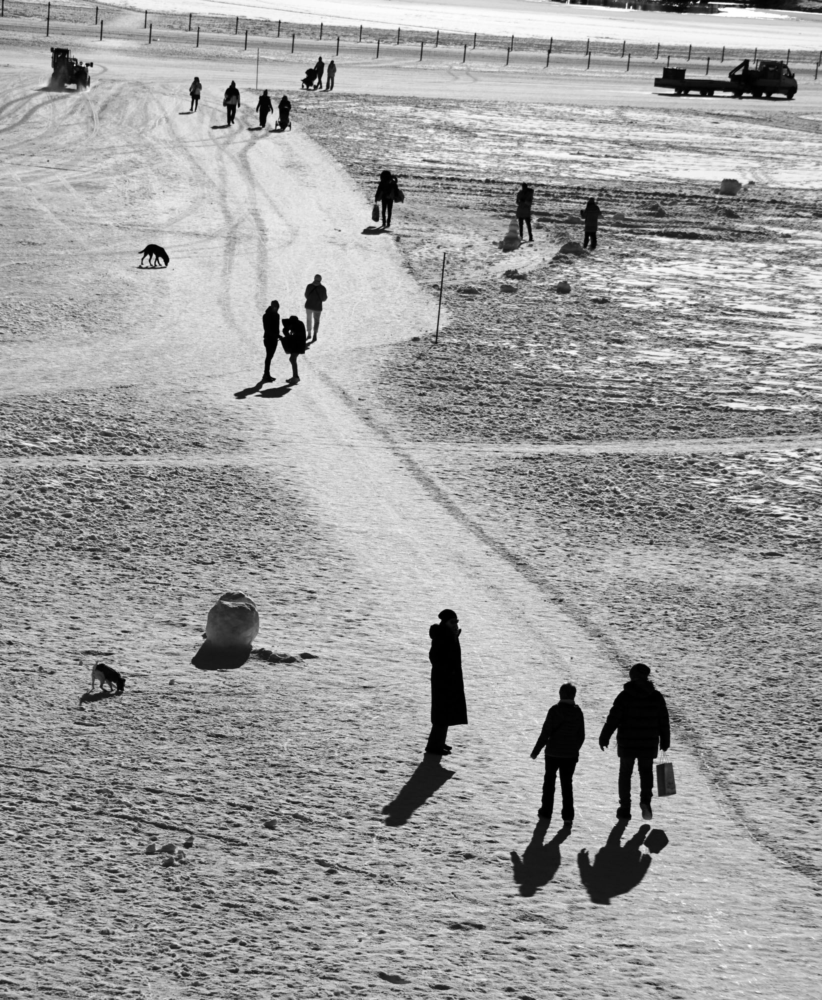
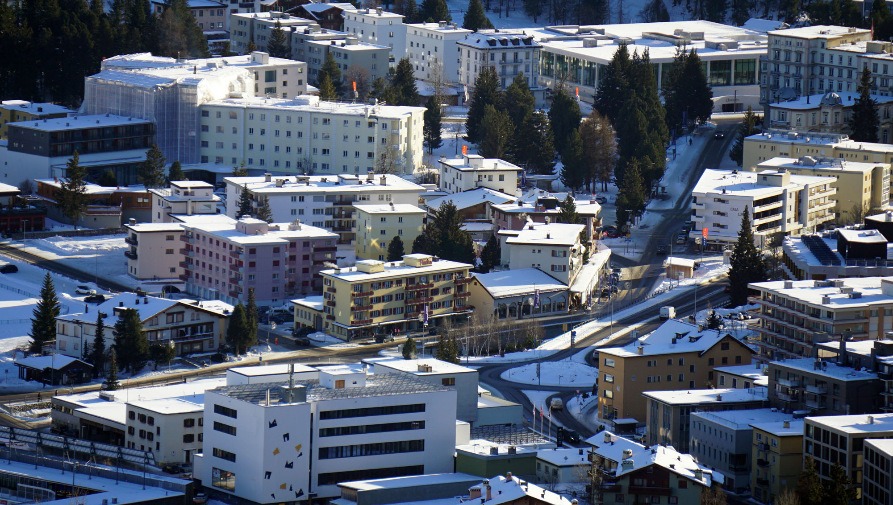
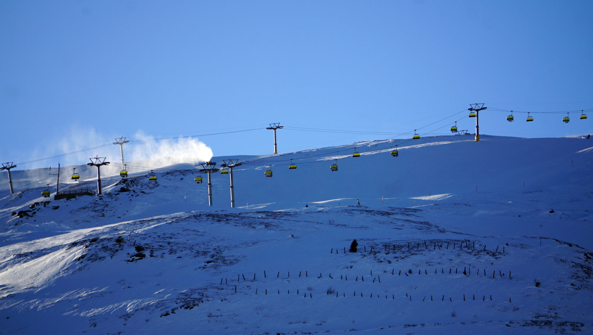
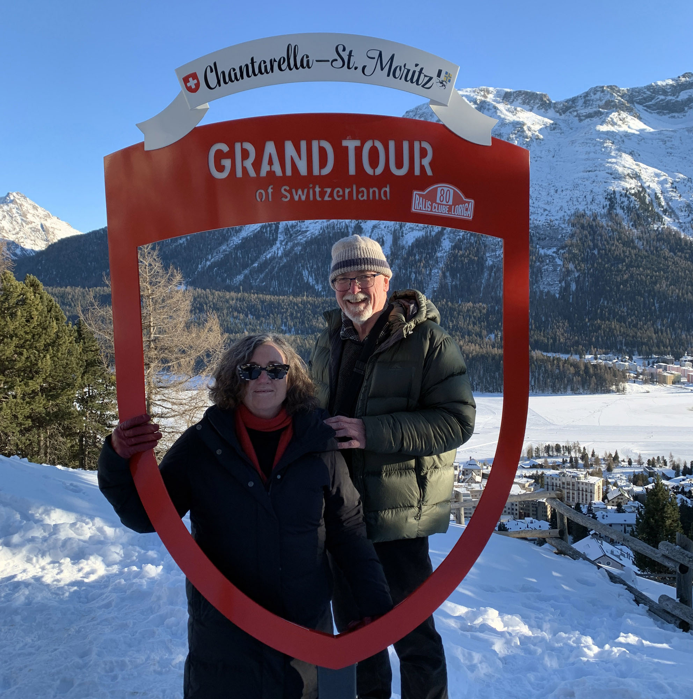

We have ski resorts here in Australia, and sure they're nothing like those in Europe, and certainly none are like St Moritz. Interestingly it was a wager in 1864 by Johannes Badrutt, owner of the Kulm Hotel, in St Moritz that sparked off the winter skiing industry. Before then St Moritz was a lovely summer spa town and everything closed down in winter. He bet some English guests that he would cover their travel and accommodation if they returned in winter and didn't enjoy it. They came, stayed far too long, and sparked the international winter resort industry.
We woke bright and early and using our Eurail pass we headed to classy St Moritz, just three hours away. Why would we go there when we don't ski? Well, it's the launching place for the Glacier Express train from there to Zermatt and the mighty Matterhorn.
If it wasn't for the Glacier Express, we probably wouldn't have bothered with St Moritz as our interests don't lie in that scene, however the trip there was glorious. Lovely scenery, of course - it seems that there are no ugly places in Switzerland. The only problem with the trip is that Mark kept complaining about a sharp pain in his hip area. Turns out his wallet could sense the abuse it was about to be dealt and it was fighting to escape.

Coming from the central west of NSW where it regularly snows, we thought that we had that 'walking on icy surfaces' thing all sorted. Alas, there's central west snow, which is a short-lived novelty, and there's St Moritz snow, which is more treacherous, and most likely, more expensive.
The walk from where the bus dropped us off up to our bed for the night at Hotel Languard was a challenge with our two wheely bags. The hotel itself was very charming and the staff were helpful. The room was enormous and it had a cracking view of the frozen lake and the sky piercing mountains.
We had more soup for lunch in a nearby cafe, which is all we were willing to pay at this ritzy resort for the beautiful and famous. The cakes were reasonably priced so we had a jam donut and a chocolate profiterole. Both were delicious.

After lunch we went for an unnerving stroll across the frozen lake before ascending to the first level of the funicular railway. It gave us a fantastic view of the town and an eye-level view of the incoming flights of the wealthy.


At the look-out there is one of those Instagram ready frames that you can use to show off. As we stood there like the prize dorks that we are, another tourist offered to take our pic for us. We reciprocated of course, it's what you do.

You hear the term 'Eat like a local' a lot on travel blogs; here in Switzerland we soon discovered it means to buy ready-made meals from the nearest Coop. We grabbed a pasta salad and a slice of pizza from a takeaway shop near our hotel. We had a bottle of Coop wine with our meal and topped it off with a free-poured nip of whisky.
A bath followed and seriously, who needs to be a millionaire?